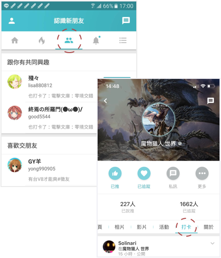
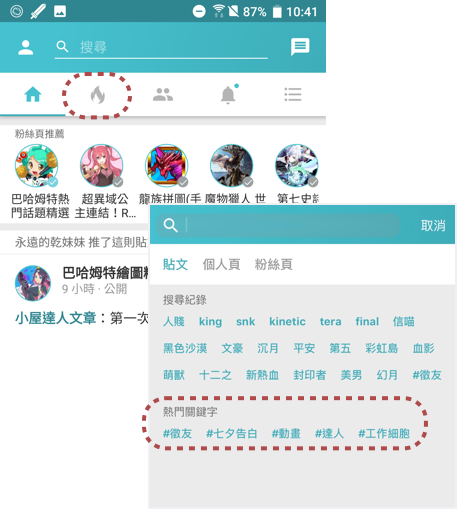

iOS下載
iOS下載
透過追蹤來關心遊戲、達人、朋友的最新動態
您可以追蹤喜歡的ACG作品粉絲頁或擅長創作的小屋達人，再加上巴哈姆特認識的朋友，在依據貼文時間的排序下，打開勇者動態牆首頁就能看到這些追蹤對象的最新動態，集中瀏覽感興趣的情報或文章。
曬卡、開箱、速報，1分鐘內輕鬆完成
簡單易懂的發表貼文介面可以上傳相片、標記朋友之外，還能用「打卡作品」來寫二次元ACG日記，記錄你的豐功偉業，另外每天發文還能獲得
30巴幣+15經驗值
的獎勵喔！
用推跟留言就能簡單互動、打屁聊天
巴友看到貼文可以按「推」表示肯定、鼓勵之外，也能在留言中上傳相片彼此交流心得，或是輕鬆展開宅文化的圖戰對話，讓留言也很有看頭！
可以認識新朋友，也能找戰友
透過新朋友頁面的「跟你有共同興趣」及「喜歡交朋友」區塊有機會認識新朋友之外，也能到喜歡的作品粉絲頁「打卡」專區，找到在玩同一款遊戲的戰友，或是也愛看某一部動畫的巴友，不要害羞的送出好友邀請，就能拓展你的二次元好友圈。

內容不夠看就來挖掘更多吧！
看完首頁追蹤對象的貼文之後，可以到
熱門貼文
挖掘其他勇者貼文，或是利用搜尋
功能輸入作品名稱找到相關貼文或是粉絲頁，也可以輸入印象中的勇者暱稱來找人。沒有特定目標的話，點擊「熱門關鍵字」看看其他相關貼文也許會有意想不到的收穫。

深色版的視覺感官體驗
光明世界跟黑暗世界都有人愛，為了讓大家各投其所好，只要到「設定」的「設定與隱私」找到夜間模式開關，就可以輕鬆切換到深色版的介面瀏覽模式！
最重要的！每日簽到不能少
每天第一次打開勇者動態牆就會自動完成簽到，如果上完廁所忘記到底有沒有簽到（？），可以到「設定」的「設定與隱私」裡確認一下最近簽到時間喔。